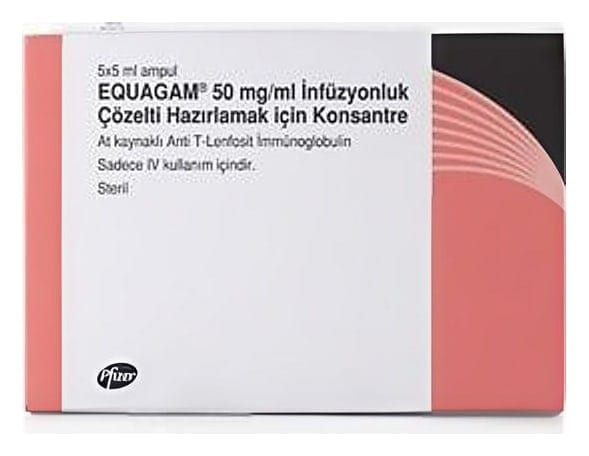

Equagam 50 mg/mL IV İnfüzyonluk Çözelti Hazırlamak İçin Konsantre (5 Adet)

Ne için kullanılır
KT · Bölüm 1EQUAGAM, şeffaf ila hafif opalesan, renksiz ile açık pembe veya açık kahverengi renkte steril sulu çözeltidir. Saklama sırasında çok az miktarda granül ya da pulsu çökelti meydana gelebilir.
Ürün, 5mL Tip1 cam ampullerde tedarik edilmekte olup; her kutuda 5 ampul bulunmaktadır.
EQUAGAM atlara insan timüs hücrelerinin enjekte edilmesi ile elde edilir. Vücudunuzdaki bağışıklık sistemi hücrelerinin bir kısmına bağlanan ve bunları yok eden immünoglobülinler (antikorlar) içerir.
Aplastik anemi adı verilen bir hastalığı tedavi etmek için kullanılır. Aplastik anemi, bağışıklık sisteminiz yanlışlıkla kendi hücrelerine saldırdığında ve kemik iliği yeterince kırmızı kan hücresi, beyaz kan hücresi ve trombosit (kanın pıhtılaşmasına yardımcı olan kan parçacıkları) üretemediğinde ortaya çıkar. EQUAGAM diğer ilaçlar ile birlikte kullanıldığında kemik iliğinizin yeniden bu kan hücrelerini yapmaya başlamasına yardımcı olur. Ayrıca kan nakli ihtiyacınızın ortadan kalkmasına da yardımcı olabilir. Bağışıklık sistemini baskılayan ilaçlar aplastik anemiyi tedavi etmez. Ancak semptomlarının rahatlamasını ve komplikasyonların azalmasını sağlayabilir. Bu ilaçlar sıklıkla kan ve ilik kök hücre nakli olamayan veya kemik iliği nakli için bekleyen kişiler için kullanılmaktadır. EQUAGAM, yetişkinlerde, 2 yaş ve üzeri çocuklarda kullanılabilmektedir.